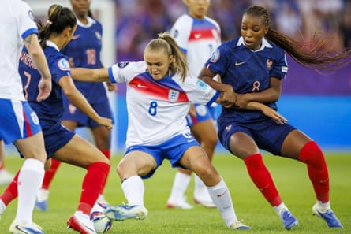

The hour mark was approaching when Sarina Wiegman rolled the dice or, perhaps more accurately, reached for the comfort blanket. A salvage operation of this scale had not been part of anyone’s masterplan, but at least Ella Toone and Chloe Kelly knew exactly how to move the dial at a European Championship. They were the history makers at Wembley in England’s most recent appearance on this stage; if it was going to be anyone, it surely had to be them.
There were to be no heroics this time , even if Selma Bacha’s late clearance was ultimately all that came between Wiegman’s players and a draw. That statement is, in itself, illusory because the manager must face questions about her selection here. She had plumped for Lauren James’s explosive gifts in the No 10 position, sticking to the claim that the Chelsea forward was ready to ramp up her recovery from injury, but the call backfired badly. England were misshapen and leggy where it mattered; the game simply got away from them and so, with another ill-conceived step against the Netherlands, could their Euro 2025 campaign.
Another dreamy Swiss summer’s day found its culmination in Letzigrund, a low-slung bowl whose prominence as an athletics arena does not diminish its appeal. It felt like tournament football by numbers: a sunny exoticism in the air as England shirts mingled with French colours, along with a sprinkling of local representation, while the masted summit of Uetliberg gazed over to the south.
Wiegman rubbed her hands together as England walked out for the anthems and who, at the point, could have felt anything but the same tingle of anticipation? Debate about her decisions and, particularly, treatment of absent senior players had hung over the buildup but the camp had felt positive and bright since their arrival on Monday. There are plenty in this squad who have the muscle memory of winners.
James’s inclusion was by some distance the main talking point. The hamstring she injured in April was deemed up to the challenge posed by a physical France; few others on show this month can strike a ball like James, or provide the explosive moment of inspiration and incision that rips the tightest of encounters asunder. Wiegman felt the chance was worth taking; a full-tilt James could set the tone in the most obvious heavyweight clash of this group stage.
Perhaps she would think twice next time. England started fiercely enough and should have led when James unleashed that right foot inside the box but fired over. In those early moments she was everywhere, drifting wide and helping overload the left-back Bacha. Had Alessia Russo’s 16th minute piece of opportunism not been overturned by the video assistant referee (VAR), perhaps they would have pulled clear. Instead they were swamped from thereon, rarely threatening until Keira Walsh injected a late urgency that had been painfully absent.
England did not have the legs, nous or numbers to combat a French midfield three that seized control after those early wobbles. It is a time-honoured observation that France have historically underachieved by, consciously or not, prioritising individualism over the tenets of assembling a competent unit. This time they were admirably connected throughout. Meanwhile Walsh and Georgia Stanway were frequently left exposed by a wandering James, who perhaps lacked the match sharpness to get up and down and was guilty of overelaborating in deep positions.
Georgia Stanway tussles with Grace Geyoro but looked low on rhythm having come back from knee surgery in January.Photograph: Michael Buholzer/EPA
They were outnumbered by their opponents, for whom the captain Sakina Karchaoui was superb. Stanway has endured well-documented injury problems of her own, winning her race to Switzerland after knee surgery in January but looking noticeably low on rhythm. In hindsight Wiegman’s bet on not one, but two players with fitness concerns in the engine room came to look foolhardy. A hungry, athletic, slick France were unlikely pass up on such a gift.
France’s appetite for the battle was summed up by the crunching tackle, hard but perfectly fair, that Maëlle Lakrar left on Russo in the run-up to their decisive second goal. Sandy Baltimore, one of the speed merchants who bothered England all night, finished off the move but they had been found wanting in a key duel. The trend continued until those dying moments when the kitchen sink came out: this was a curiously flat and sloppy display all round, their timing out of sync and intensity only surfacing in bursts. When Leah Williamson steamed in on Karchaoui midway through the second half, both players briefly left in a heap but unscathed, at least it suggested an awareness of what had been missing.
They must discover it in time for what looks, in effect, to be an early knockout tie against the Netherlands on Wednesday. A positive reading might be that England were sharpened up here: given the jolt reigning champions sometimes need.
A defeat on opening night can define a summer’s work positively. But if the watching Thomas Tuchel, the England men’s manager who has found himself under scrutiny, sought information here about the secret sauce that cooks up trophy parades in London he will have been frustrated. England, James and Wiegman were hamstrung by a gamble whose ramifications may be severe.